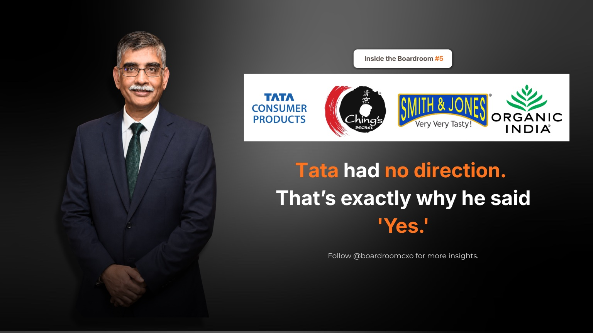

In 2020, Sunil D'Souza was offered one of the biggest jobs in Indian FMCG. He initially said no.
He was running Whirlpool India at the time, at a conference in San Francisco, when the call came. Tata wanted him to lead its consumer business. He turned it down. His stated reason was blunt: the company looked like it had no direction.
Then someone told him something that changed his mind.
The Objection Was the Job Description
The very thing putting him off, the lack of direction, was the exact reason N. Chandrasekaran wanted him in the chair. Tata did not need a caretaker for a business that already knew what it was. It needed someone to build something that did not exist yet. D'Souza flew to Bombay House, met the chairman, and took the job.
What he inherited was not a modern FMCG company. It was a tea business and a salt business, both decades old, sitting inside a group that had merged its beverages arm with a chemicals food division only a year earlier. Chandrasekaran's brief to him was blunt: "I want to be an FMCG company."
Most leaders in that seat would have polished what already existed, tightened the tea business, defended the salt franchise, called it a turnaround. D'Souza expanded the whole thing instead.
Why "No Direction" Was the Real Opportunity
This is the part most retellings of the story flatten into a simple redemption arc. It is worth being specific about the mechanism.
A company with a clear, working strategy does not need to hire a new leader from outside to execute it. It promotes from within, because continuity is the whole point. A company that hires an outsider into an ambiguous mandate is usually signalling something different: leadership already knows the current shape of the business is not the end state, and they are looking for someone who can define the next one without a template to follow.
D'Souza's initial instinct, that a lack of direction was a red flag, is the instinct most experienced operators have, and it is usually correct. What separates the outcome here is that he checked that instinct against the actual intent behind the ambiguity before walking away. An unclear brief from a board that has already decided to build something new is a very different opportunity than an unclear brief from a board that is simply avoiding a hard decision.
How the Build Actually Happened
D'Souza did not turn Tata Consumer into an FMCG company by improving tea and salt margins. He did it by category expansion, executed through acquisition and distribution, at the same time.
He brought in Ching's Secret to own Desi Chinese and Smith & Jones for Italian-style cooking. He acquired Organic India. He pushed hard into packaged staples, pulses, and ready-to-drink, categories a tea and salt company had no obvious right to win on brand history alone. None of that works without the second half of the strategy: he built distribution until the business reached close to 290 million households and pushed toward nearly four million outlets across India.
Acquisitions without distribution reach become a portfolio of disconnected brands. Distribution reach without new categories to sell through it is wasted capacity. D'Souza ran both tracks together, which is the actual difficulty in this kind of mandate and the reason it cannot be delegated to a single function head.
Where the Numbers Landed
Six years later, Tata Consumer Products posted ₹20,290 crore in revenue and sits among the top 10 FMCG companies in the country. A business that Chandrasekaran himself described as lacking a clear identity is now a recognised category player across tea, salt, packaged food, and ready-to-drink.
D'Souza was hired because the picture was unclear. The picture only got clearer because he was willing to draw it.
The Boardroom Read
Boards and founders routinely write job descriptions that sound like a request for a manager when what they actually need is a builder, and the mismatch shows up as candidates like D'Souza's first instinct, a qualified operator who takes one look at the ambiguity and declines. The fix is not to make the brief sound cleaner than it is. It is to be explicit, the way Chandrasekaran was, about whether the mandate is to run something or to invent something.
For a candidate evaluating a role like this, the diagnostic question is not "does this company have a clear strategy." It is "does the person making this offer know exactly why the strategy is unclear, and do they want it solved or do they want it hidden." D'Souza got a straight answer to that question before he said yes the second time.
The unclear brief is often the one worth taking, but only after someone has told you, honestly, why it is unclear.
Frequently Asked Questions
Why did Sunil D'Souza initially turn down the Tata Consumer Products job?
Sunil D'Souza was running Whirlpool India when Tata approached him about leading its consumer business. He turned the offer down at first because, in his own words, the company looked like it had no clear direction, a tea and salt business that had only just merged its beverages arm with a chemicals food division.
What changed Sunil D'Souza's mind about joining Tata Consumer Products?
He was told that the very thing putting him off, the lack of direction, was the exact reason N. Chandrasekaran wanted him in the role. Tata did not need a caretaker for an existing business. It needed someone to build a company that did not yet exist, which reframed the ambiguity as opportunity rather than risk.
What was Tata Consumer Products before Sunil D'Souza took over?
It was primarily a tea business and a salt business, both decades old, sitting inside a group that had merged its beverages arm with a chemicals food division only a year before D'Souza joined. Chandrasekaran's brief to him was direct: he wanted it to become an FMCG company, not remain a two-category legacy business.
How did Sunil D'Souza expand Tata Consumer Products beyond tea and salt?
He acquired Ching's Secret to enter Desi Chinese and Smith & Jones for Italian-style cooking products, bought Organic India, and pushed into packaged staples, pulses, and ready-to-drink categories. He also built out distribution, reaching close to 290 million households and nearly four million retail outlets across India.
How much revenue does Tata Consumer Products generate now?
Tata Consumer Products reported ₹20,290 crore in revenue and now ranks among the top 10 FMCG companies in India, roughly six years after Sunil D'Souza took charge of what had been a narrow tea and salt business.
What is the leadership lesson in Sunil D'Souza's decision to take the Tata Consumer job?
An unclear mandate is often a build mandate in disguise. When a company looks directionless, it may mean leadership has already decided not to keep doing more of the same and is looking for someone to define the next version of the business, rather than manage the current one. That kind of brief rewards operators who can create structure, not just execute an existing plan.
Related Reading
Ramesh Chauhan Sold Thums Up to Build Bisleri From Scratch
Read → R · 02 Founder Leadership · July 2026Sudhir Sitapati: Why He Left HUL's Safest Seat for Godrej
Read → R · 03 Founder Leadership · July 2026Shailesh Jejurikar: P&G's First Indian-Origin CEO in 187 Years
Read →Hiring for a mandate that isn't fully defined yet?
The hardest CXO briefs are the ambiguous ones, build a category, expand into new territory, define what the business becomes next. We place leaders who can create structure, not just execute an existing plan.
Brief Us on a Mandate